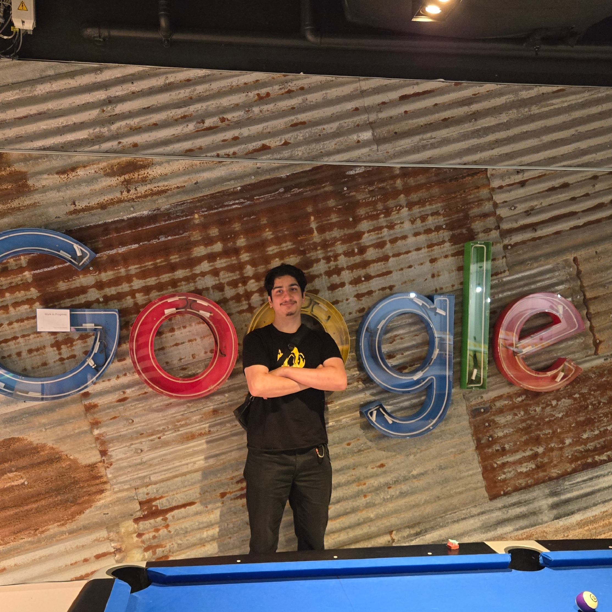

Problem or Motivation
Manual attendance can be inaccurate and slow. I wanted a frictionless mobile system that confirms presence reliably without requiring heavy infrastructure.
What I Built
- Android app with BLE-based proximity verification.
- Session logging and encrypted local record storage.
- Admin export utility for attendance summaries and audits.
Tools and Technologies Used
- Kotlin, Android SDK, Bluetooth LE APIs
- SQLite and local data encryption patterns
- Basic REST sync service for remote backups
My Role and Contributions
- Implemented BLE scanning logic and attendance state machine.
- Designed mobile UI flow for quick check-in under low connectivity.
- Built reporting export format for administrators.
Challenges and Lessons Learned
- Bluetooth signal noise required configurable proximity thresholds.
- Battery usage optimization was key for sustained operation.
- Offline-first design improved practical usability.
Gallery or Screenshots
